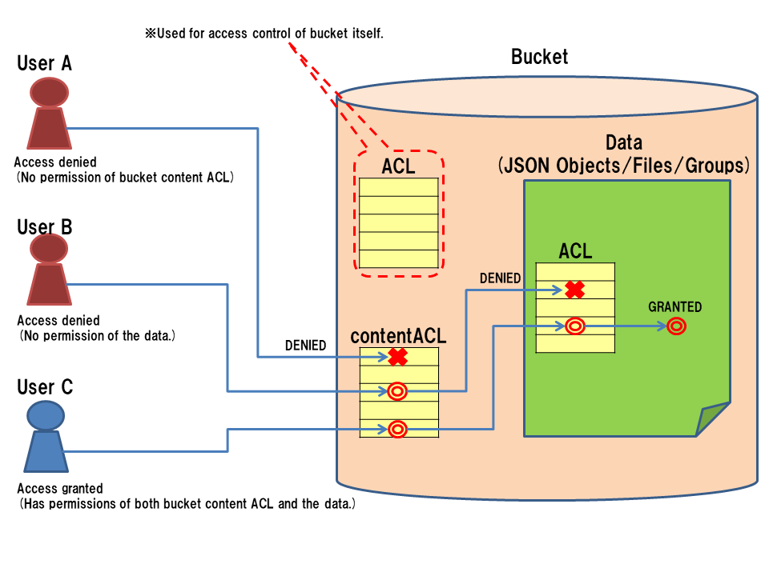

2.6. Security: ACL¶
2.6.1. ACL overview¶
BaaS uses ACL (Access Control List) for access control.
You can set an ACL to each groups, object storage (bucket and object), file storage (bucket, files) and so on to restrict access.
In the ACL, you can set owner of the data, readable/writable users and groups, administrator users and groups.
2.6.2. Representation of the ACL¶
Since the representation format of the ACL is common to all services, so we will explain the format of the ACL here.
The ACL is written in JSON format, and embed in the JSON of the target object. To embed the ACL in an object data of object storage, put it in “ACL” property of the target like as:
{
"_id": "xxxxxxx",
"itemName": "Computer 12345",
"price": 120000,
"date": "2014-03-04",
"ACL": {
"owner": "514af36644f9cb2eb8000002",
"r" : [ "g:authenticated" ],
"w" : [ "514af36644f9cb2eb8000002", "514af36644f9cb2eb8000003" ],
"c" : [],
"u" : [],
"d" : [],
"admin" : [ "514af36644f9cb2eb8000002" ],
}
}
Each property of the ACL has following meanings.
- owner: User id of the owner of the object. The owner has all permissions on the object.
- r: User ids and group names who has read permission of the object.
- w: User ids and group names who has write permission of the object. Includes “c”, “u” and “d” permissions.
- c: User ids and group names who has create permission of the object. Valid only for contentACL.
- u: User ids and group names who has update permission of the object.
- d: User ids and group names who has delete permission of the object.
- admin: User ids and group names who can change the ACL of the object.
To specify group, the group name must be prefixed with “g:”.
Also, you can use following special group names.
- anonymous: A group that includes all users, including unauthorized users.
- authenticated: The group contains all authorized users.
2.6.3. contentACL¶
For bucket, you can specify ACL for the bucket itself and contentACL for the contents of the bucket.
The following is example of bucket information. You need to embed “ACL” and “contentACL” in the bucket JSON. The contentACL does not have owner and admin fields.
{
"name": "BucketName",
"ACL": {
"owner": "514af36644f9cb2eb8000002",
"r" : [ "g:authenticated" ],
"admin" : [ "514af36644f9cb2eb8000002" ],
},
"contentACL": {
"r" : [ "g:authenticated" ],
"w" : [ "514af36644f9cb2eb8000002", "514af36644f9cb2eb8000003" ],
}
}
2.6.4. Relationship between data ACL and bucket content ACL¶
When the BaaS server accesses the data, it checks ACL of the target itself and contentACL of the bucket containing the target.
The access is granted only when both permission checks passed. Therefore, even if the data ACL allows access, access will be denied if contentACL does not allow.And even if the contentACL allows access, the access will be denied if ACL does not allow.
{kind=link}
2.6.5. Special Bucket¶
There are following three special bucktes other than normal buckets.
- _ROOT: The root bucket. It controls permissions to create object buckets and file buckets.
- _USERS: The users bucket. It controls read, add, modify and delete permissions of users.
- _GROUPS : The group bucket. It controls read, add, modify and delete permissions of groups.
You can review and change the permissions of the special buckets on the Developer Console.